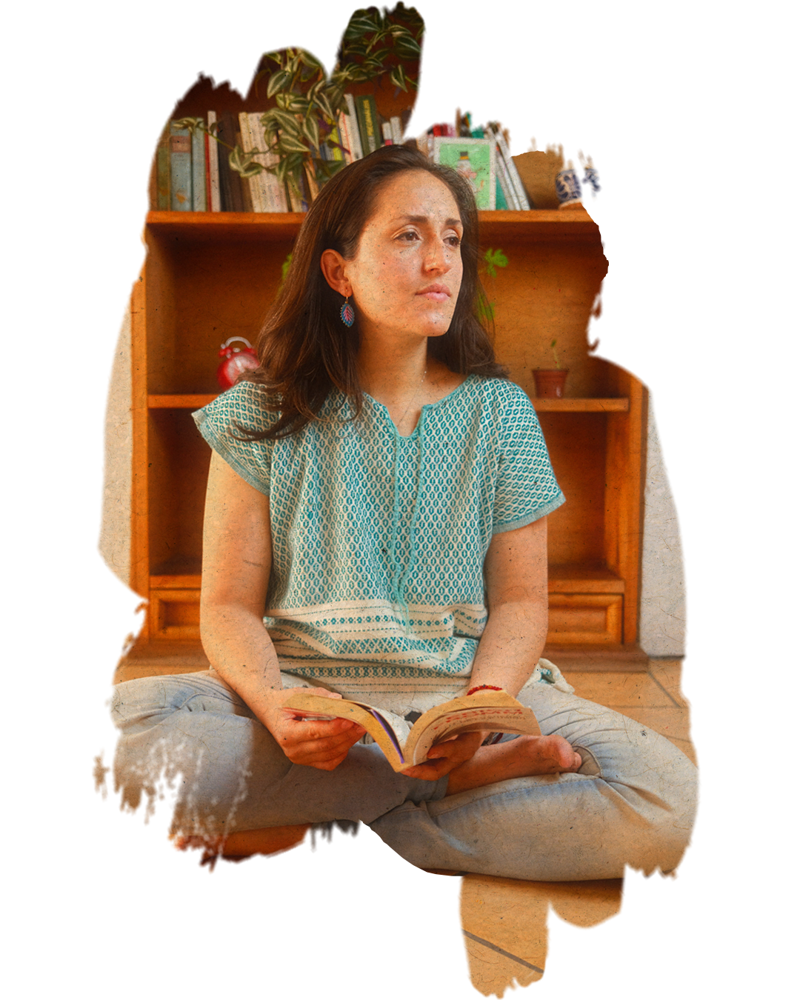

¡Hola!
“No hay nada comparado al amor cuando se trata de curar las
heridas del ser humano. Las técnicas pueden ser útiles, pero lo
básico no es la técnica, sino un corazón amoroso”
(Osho)
Visita mi LinkedIn para más información La vida me ha llevado a creer que los cambios y la transformación de uno (a) mismo (a) son posibles, con el cuidado y amor necesarios como ingredientes principales; acompañados del crear conciencia, el autoconocimiento, la compasión, empatía, curiosidad, esperanza, bondad, amabilidad, valentía, sentido de propósito, equilibrio emocional, soportar la pérdida y el desarrollo de la integridad (Bleucher, S., 2008).
El camino hacia el autoconocimiento y la conciencia, es un camino de valientes y pienso que todos lo somos o podemos serlo, solo que a veces nos hace falta guía y acompañamiento: ya que con frecuencia en el trayecto podemos sentirnos muy perdidos. Ir acompañados de un ser lo suficientemente sensible y preparado puede ser de gran ayuda en la creación de cambios y transformaciones a nivel interno y personal, modificando la manera en que nos relacionamos y sentimos, no solo con nosotros mismos, también con los otros. Transitar este camino, no mentiré, puede tener tonalidades a veces algo turbias, lúgubres u oscuras, pero una vez que estas son expresadas, experimentadas, elaboradas e integradas es posible trascenderlas, tornándose a tonalidades más amables con uno(a) mismo (a).
Emprender el camino que implica estar en un proceso de psicoterapia o análisis es una decisión que debe ser propia, ya que el viaje a los lugares más profundos del ser, solo se logra con la plena conciencia, el propósito y voluntad de querer hacerlo.
Descripción de enfoque:
La idea es que el paciente pueda conocerse a sí mismo, esto se desarrolla a través de la relación psicoterapéutica, es decir, el paciente y el o la psicoterapeuta trabajan juntos, adquiriendo el paciente un rol activo en la tarea de autoexploración. Se busca entender la relación entre las características heredadas y la interacción con los padres en la infancia (en especial los primeros años de vida) y cómo eso repercute en la personalidad de la persona y en su manera de percibir, relacionarse y desenvolverse con y en el mundo; consigo mismo y con lo que lo rodea.
En el proceso psicoterapéutico se repite el modelo relacional infantil, la necesidad de ser conocido, validado y reconocido por un otro, que en este caso puede ser el psicoterapeuta dinámico, pero como una experiencia nueva, capaz de resignificar a través de la relación psicoterapéutica.
Dinámica de consulta:
 Las sesiones pueden ser llevadas a cabo tanto de manera en línea o de forma presencial; mi propuesta de trabajo inicial es agendar 5 sesiones (son sesiones semanales de una hora); esto con la finalidad de que puedas familiarizarte con las características de un enfoque psicodinámico y con mi manera de trabajar. La quinta sesión hablaremos de qué pude observar en ese lapso de tiempo con respecto a la problemática a tratar y a su vez podrás expresar tu interés y sentir respecto a continuar o no en el proceso psicoterapéutico conmigo y así evaluar si podemos trabajar juntos (as).Primera sesión:
En tu primera sesión hablaremos de qué es lo que te interesa trabajar en psicoterapia y resolveré las dudas que puedas tener con respecto a mi manera de trabajar. Esta sesión la acordamos de acuerdo a la disponibilidad de horario de ambas partes (paciente y psicoterapeuta).Modalidad en línea:
Para llevar a cabo las sesiones de manera en línea se recomienda tener un espacio privado, en el cual no vayas a ser interrumpido (a) o escuchado (a) por otras personas; tener buena señal de internet; acomodar el espacio antes de tu sesión con la finalidad de que te encuentres lo más cómodo (a) posible y tener pañuelos a la mano por si llegas a necesitarlos. Las sesiones las llevamos a cabo por videollamada en Facebook o WhatsApp, en ocasiones también por Google Meet. En este caso el pago de la sesión se efectuará a través de una transferencia electrónica o depósito bancario antes de cada sesión.El costo de mis honorarios es de $400.00 MX la sesión. En caso de existir alguna dificultad para poder pagar ese costo siempre podremos charlarlo.
Contacto